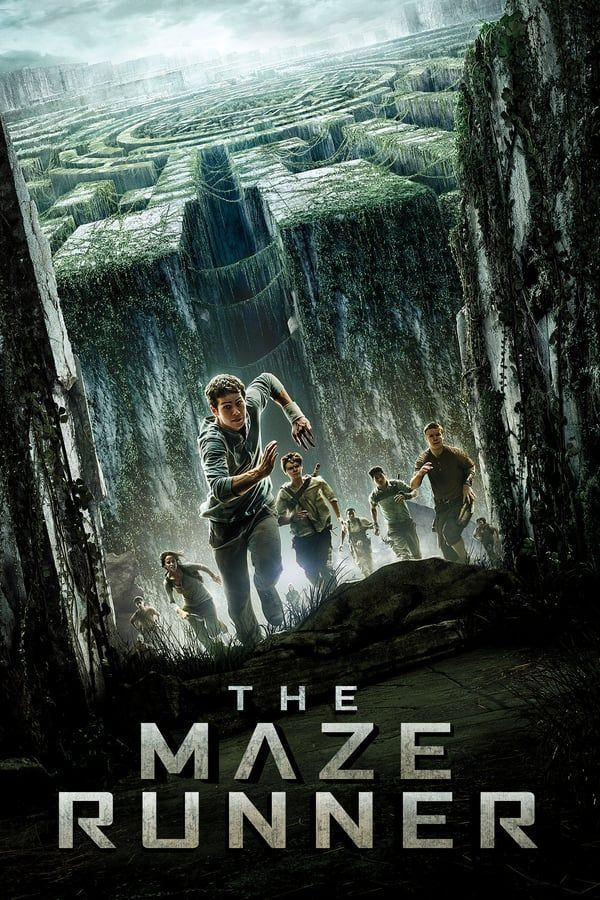
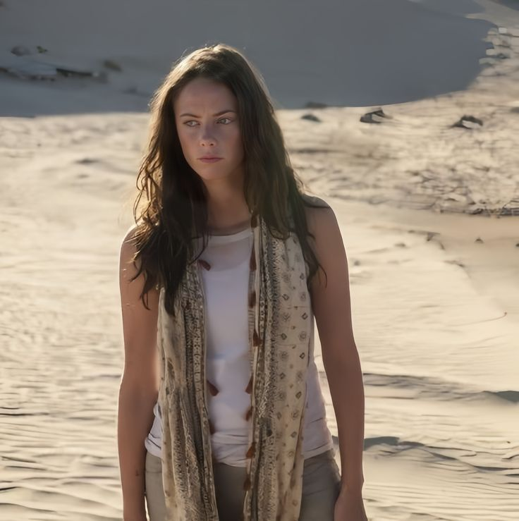
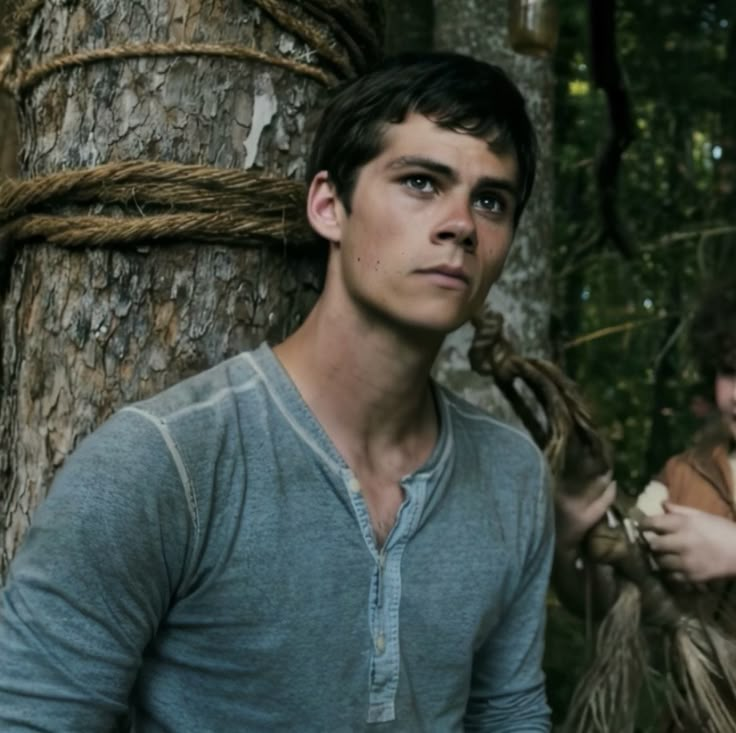
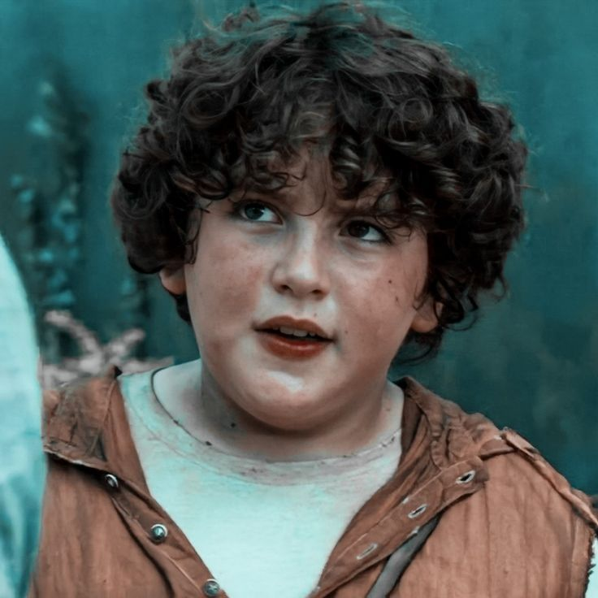
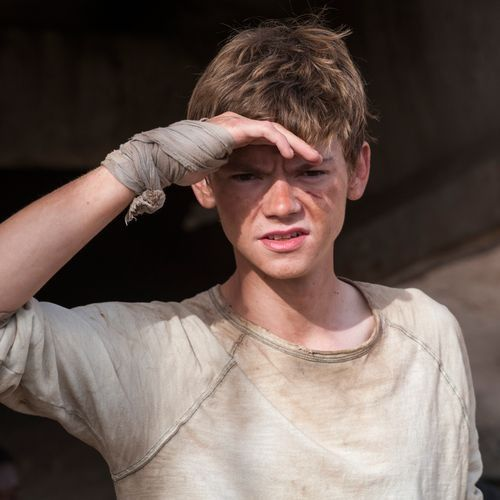
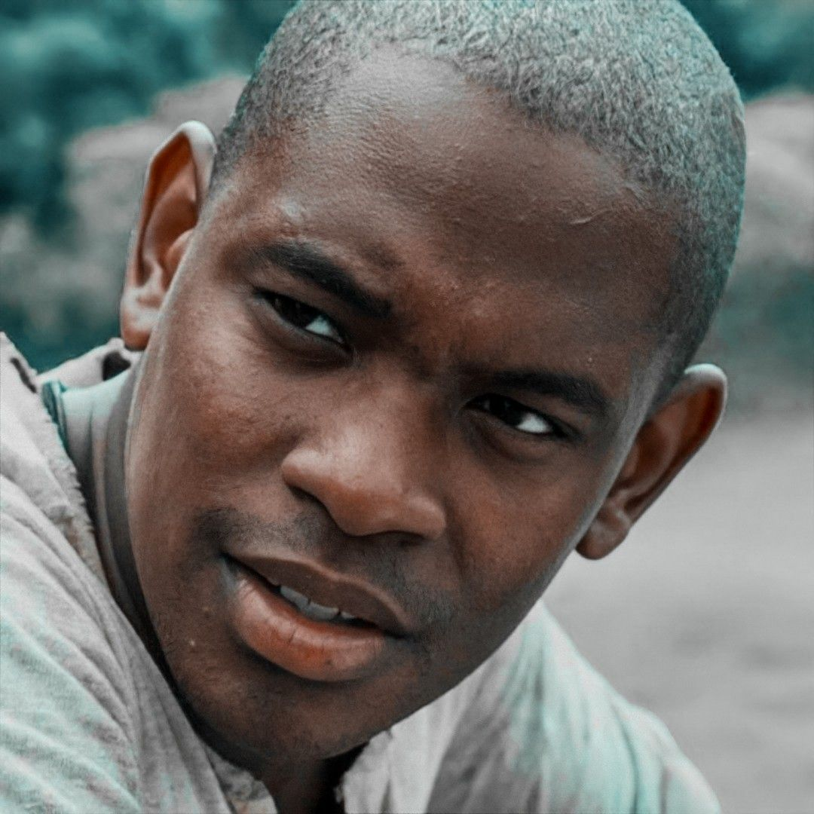
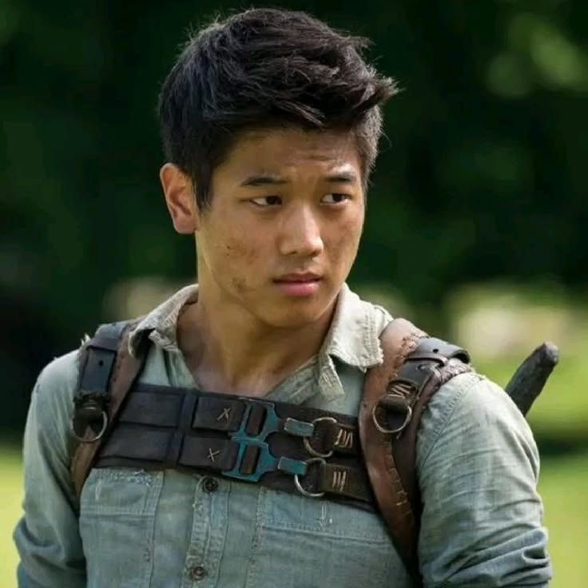
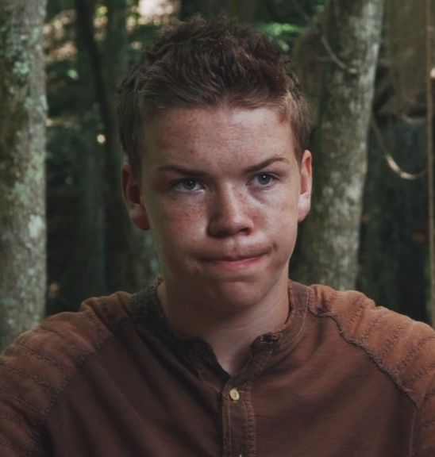

Сюжет фільму
Готові зануритись у світ лабіринту та побігати в його стінах? Тоді поїхали!
Почати пригоду!
Як усе закрутилося
Це історія про Томаса, який потрапив на Галявину (Глейд, так її називають люди живуть там — глейдери) — місце, де ув'язнені понад 60 інших людей. Вони більше трьох років намагаються знайти вихід з лабіринту, але не можуть цього зробити, позаяк його конструкція щодня змінюється. Ба більше, в лабіринті мешкають моторошні ґрівери, що вбивають кожного, хто не сховається після заходу сонця. Хлопці навчилися виживати на Галявині — величезній відкритій місцевості, оточеній масивними кам'яними стінами. Під час збору добрив у лісі Глейду на Томаса нападає Бен, бігун, якого вжалив ґрівер, відтак глейдери виганяють Бена за ворота перед їхнім закриттям. Наступного ранку Албі та Мінхо йдуть до Лабіринту, аби знайти сліди Бена, але Албі також вжалили, і Мінхо не встигає дотягнути його на Галявину. Томас встигає ввійти до Лабіринту, щоб допомогти їм. Разом вони проводять ніч, ховаючись від ґрівера, якого вони убивають за допомогою повсякчас перемінливого Лабіринту. З останків ґрівера хлопці добувають якийсь електронний прилад.
Ліфт, який раніше привозив нового підлітка і припаси раз на місяць, прибув поза розкладом і доставив дівчину Терезу, яка одразу пам'ятала своє ім'я. Записка в її руці свідчить, що вона остання з усіх.
Обстеживши Лабіринт, два бігуни Мінхо й Томас знаходять можливий вихід з нього, скориставшись пристроєм з ґрівера. Але наступної ночі величезні стіни Глейду не закрились і безліч ґріверів атакують мешканців Галявини, убиваючи половину. Томас знаходить частину спогадів про себе, Терезу і організацію, яка створила Лабіринт як своєрідний тест. Він збирає частину мешканців Галявини й веде їх до виходу. Вибравшись із Лабіринту, вони знаходять лабораторію з тілами вчених і відеопослання від керівника лабораторії. Жінка розповідає, що планета була знищена збільшеною сонячною активністю, за якою настала жахлива епідемія. Їх помістили до Лабіринту задля експериментів із пошуку ліків проти вірусу. Наприкінці фільму видно напад на лабораторію та смерть її керівника.

Томас А2
Головний герой, який прибув до Глейду передостаннім
Актор: Ділан О'Браєн

Чак А4
Найкращий друг Томаса, який прибув у Глейд до нього. Наймолодший з підлітків
Актор: Блейк Купер

Ньют А5
Друг Томаса, другий лідер після Албі. Колишній Бігун, який залишив це заняття після травми
Актор: Томас Броді-Сангстер

Албі А6
Лідер Глейду. Також пройшов через Метаморфозу
Актор: Алм Амін

Мінхо А7
Куратор Бігунів
Актор: Кі Хонг Лі

Галлі А9
Юнак, який пройшов через Метаморфозу. Відчуває до Томаса жагучу ненависть
Актор: Уілл Поултер
